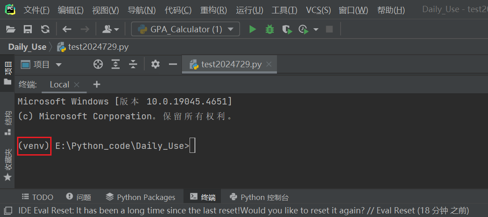

Python解释器&环境
Python解释器/环境相关
1. Python解释器
Python解释器：Python解释器是解释执行Python语言的程序，可以在命令行下交互式编程或执行Python源文件。
如Python安装目录下的解释器/虚拟环境Venv目录下的解释器：
2. Python环境
Python运行过程可能使用到的所有依赖性/配置文件构成的集合。
Python环境中主要包含以下内容：
- Python.exe 解释器
- Lib 目录
- json
- thinter
- ...各种标准库
- site-pakages 目录，默认安装第三方库所在的目录
- numpy
- crypto
- ...
- numpy
- Scripts 目录，包含一些执行文件
- pip.exe 包安装管理工具
- pyinstaller.exe 打包工具
- ...
- pip.exe 包安装管理工具
- ... 其他依赖文件/配置说明等

虚拟环境
为什么需要虚拟环境？
虚拟环境（Virtual Environment）是在 Python
中创建的一个独立的工作空间，通常位于项目的根目录下，可以认为是Python环境的多个副本。虚拟环境允许你为每个项目创建一个独立的
Python 环境，这意味着每个项目都可以有自己的 Python
解释器和一组隔离的包，这些包不会影响系统级别的 Python
安装或其他项目的环境，避免了包版本冲突的问题。
常见的虚拟环境的配置工具：
- virtualenv：
virtualenv 是非常流行的 Python 虚拟环境配置工具。它不仅同时支持 Python2 和 Python3，而且可以为每个虚拟环境指定 Python 解释器，并选择不继承基础版本的包。 - venv
Python 从3.3 版本开始，自带的一个虚拟环境模块 venv， - pipenv
结合了 Pipfile，pip，和virtualenv，能够有效管理Python多个环境，各种包。 - conda
anaconda 是Anaconda 是一个非常流行的开源数据科学平台，适合于科学计算、数据分析、机器学习等领域，支持多语言多平台。Conda 是 Anaconda 发行版的核心组件之一，它是一个跨平台的包管理器和环境管理系统。安装anaconda时，会自动安装conda工具。
3. 为新项目选择解释器和配置环境
下述均以Pycharm 为例，其他IDE类似。
(1)选择基础解释器


(2)选择虚拟环境


说明：
继承全局站点软件包
若勾选则可使用Python基础环境下安装的第三方软件包。可用于所有项目
若勾选则可以在其他项目创建时在先前配置的解释器下使用该虚拟环境。
4. 第三方包管理
(1) 虚拟环境中的包管理
- 系统终端中激活虚拟环境后使用pip包管理器即可：
虚拟环境激活
在虚拟环境的Scripts目录中有两个脚本文本activate.bat（win中使用.bat，不同系统下所使用的文件类型不同，但启动方式相同）和deactivate.bat，分别用于激活虚拟环境和退出虚拟环境。
进入虚拟环境的Scripts目录运行启动脚本：
可使用pip list查看当前当前环境中已安装的包（未激活虚拟环境时则列出的包是Python基础环境中的包）。
- 在IDE平台配置虚拟环境后，直接在IDE的终端中使用pip包管理器：

注：
- 如果不激活虚拟环境，直接运行虚拟环境的
Scripts目录下的Python.exe，则此时的交互环境也将是在此虚拟环境下
- 如果不激活虚拟环境，直接运行虚拟环境的
Scripts目录下的pip.exe进行包的安装，则安装的包同样安装在虚拟环境中
(2) 基础环境的包管理
若运行pip包管理工具时没有venv虚拟环境标记，则包的默认安装目录在Python语言的\Lib\site-packages
目录下，也可使用pip list查看已安装的包。
参考
Python解释器&环境
https://ljxkkk0.github.io/Notes/Python/Python解释器-环境/